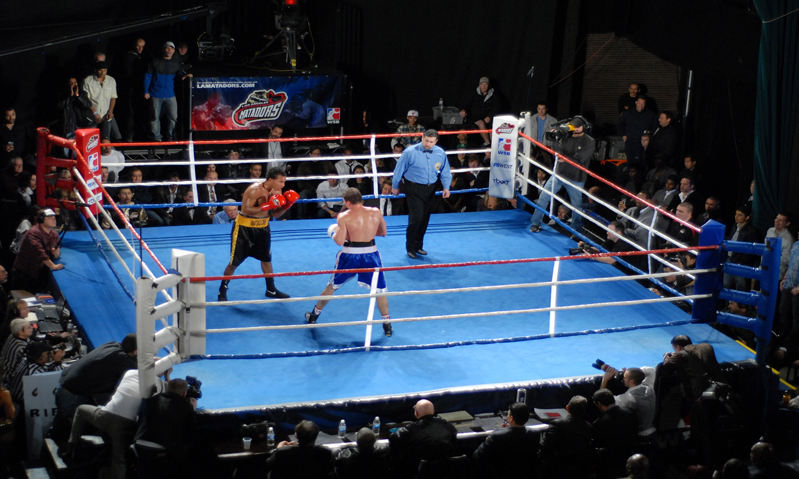
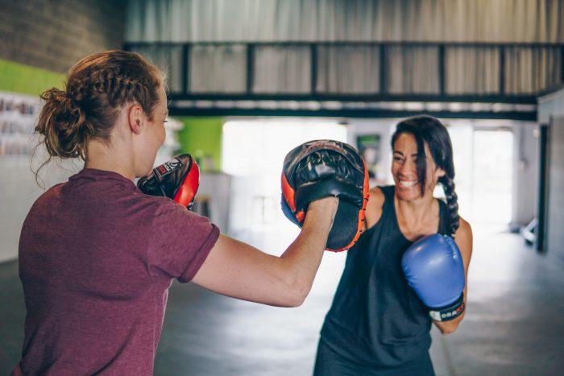
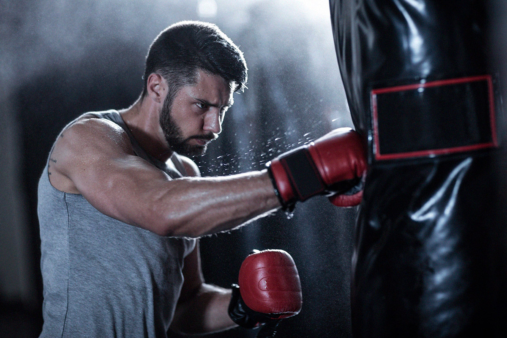

Ring nedir?
Boks karşılaşmaları ringde yapılır. Ring, üç veya dört sıra halatla çevrili ve yerden yüksekliği en az 91 cm en fazla 122 cm olan kare biçiminde bir alandır. Halat aralıkları en az 40 cm olmalıdır. Ringte kırmızı, mavi ve tarafsız beyaz köşeler vardır. Sporcular ait oldukları köşeden, hakem ve doktor ise jüri masasına yakın olan beyaz köşeden ringe çıkar.
Profesyonel boksta ringin büyüklüğü 5–6 m², amatör boksta ise en az 3–6 m²’dir. Boks karşılaşmalarında, her iki boksörün de aynı siklette (ağırlık aralığında) olması gerekir.

Antrenman ve teknikler
Boks, zor ve çok yorucu bir spordur. Boksörler antrenman yaparak karşılaşmaya hazırlanırlar. Antrenman bir başka boksörle yapılan çalışmanın yanı sıra, gölge boksu, kum torbasıyla çalışma, ip atlama ve kondisyon için koşu gibi başka çalışmaları da kapsar.
Boksta duruş çok önemlidir. Çünkü bir boksörün saldırı ve savunma gücü ile hızı, dengesine ve harekete her an hazır olmasına bağlıdır. Boksörün duruşu rahat olmalıdır. İyi bir duruşta sağ ayak, biraz öndeki sol ayakla bir denge oluşturacak biçimde sağa doğru biraz açılmalıdır. Her iki ayağın ucu da hafifçe sağa dönük olmalıdır. Böylece bedenin yalnızca sol yanı rakibe açık tutulur. Hafifçe sıkılmış sol yumruk biraz ileride ve çene hizasında olmalıdır. Sağ kol da çene hizasında, ama çeneden yaklaşık 15 cm önde tutulur. Her iki kolun dirseği, bedeni korumak için içe doğru çekilmelidir. Bedenin öne doğru biraz eğik tutulması, rakibin yumruğu karşısında denge yitirilmeksizin geriye kaçmayı kolaylaştırır.
Doğru vuruş boksun temelini oluşturur. Bu temel boksun en önemli koşuludur. Rakibe atılan yumruğun eldivenin içinde iyice sıkılmış olması gerekir. Başlıca vuruş biçimleri şunlardır:
Direkt yumruk (straight punch)
Sağ direkt (right straight punch)
Sol direkt (left straight punch)
Sağ kroşe (right hook punch)
Sol kroşe (left hook punch)
Aparkat (uppercut punch)
Swing
Dış el yumruk (backfist)
Sağ dış el yumruk
Sol dış el yumruk
Direkt vuruş adından da anlaşılacağı gibi düz bir şekilde atılır. Sol kroşe ise sol kol ile gövde arasında 45-90 derece arasında açı yapılarak atılan vuruştur. (Aynı durumun tersi sağ kroşe için geçerlidir). Aparkat çok fazla kullanılmayan,yani genelde vurma fırsatı bulunmayan bir vuruş türüdür. Fakat böyle bir durum yakalandığında çok sert etki bırakır. Genelde çeneyi hedef alır. Swing ise kroşelerin uzatılmış şeklidir. Devamlı hareketlerle rakibi şuursuz bir hücuma zorlamak ve hemen kontraataklara geçmek üzere yapılır.


Yasaklar ve Kuralları
1.Belden aşağıya ve enseye vurmak
2.Sporcunun kendi etrafında 360 derece dönerek rakibine vurması
3.Avuç içi (eldivenin beyaz boyalı bölgesi harici) ile vurmak
4.Dirsekle rakibe vurmak
5.Kulağın arka tarafına vurmak
6.Arkadan vurmak
7.Tekme atmak
8.Kafa atmak
-Yasak olan kurallardan bazılarıdır. Eğer oyuncu bunlardan birini uygularsa ihtar alır